Designing an innovation hub experience to foster authentic connection among startup founders in accelerator spaces.
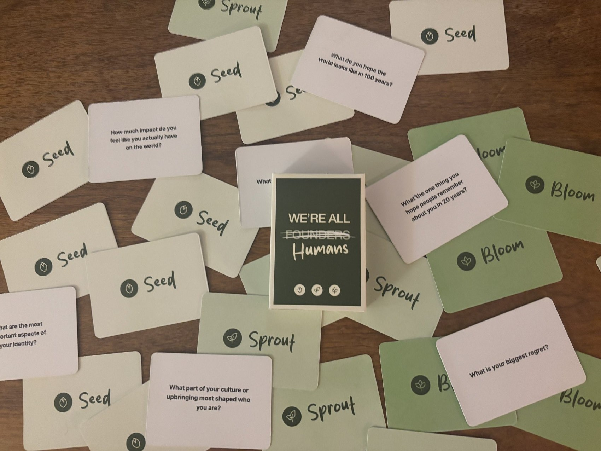
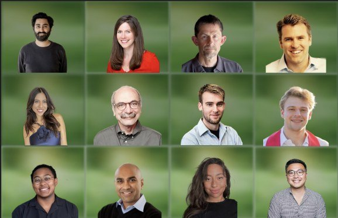
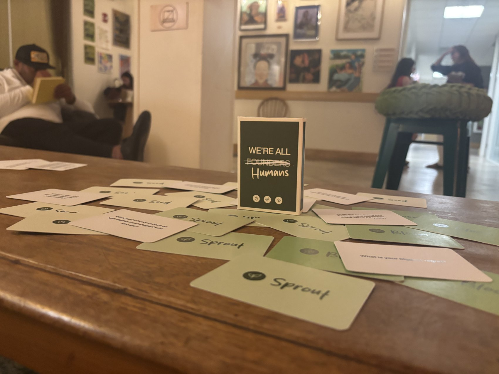
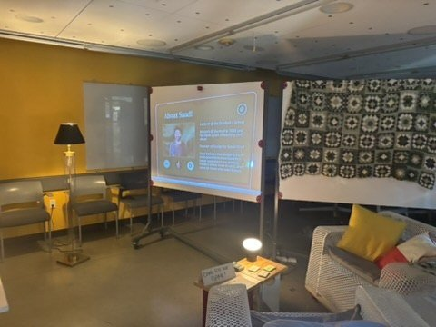
Our cards were heavily inspired by the game We're Not Really Strangers, ranging from light reflection (Seed level) to deeper conversation (Bloom level), plus questions written directly from the experiences of startup founders.
Cards were designed in Figma, printed on cardstock, corner-cut for a rounded feel, then sprayed with lacquer for a refined finish. We also built a custom box with a "How to Play" card.
View the card deck on Figma →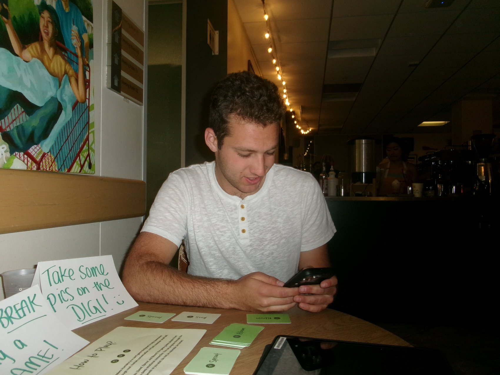
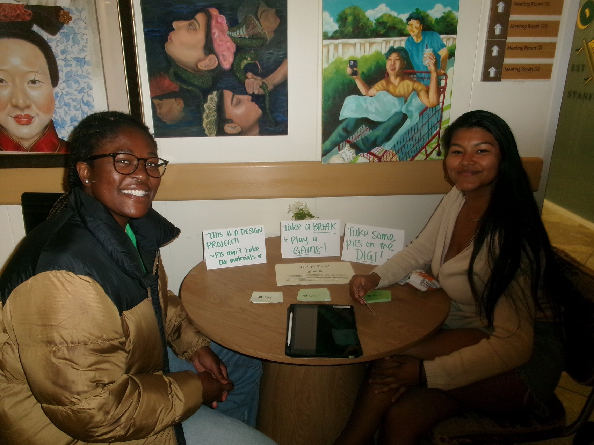
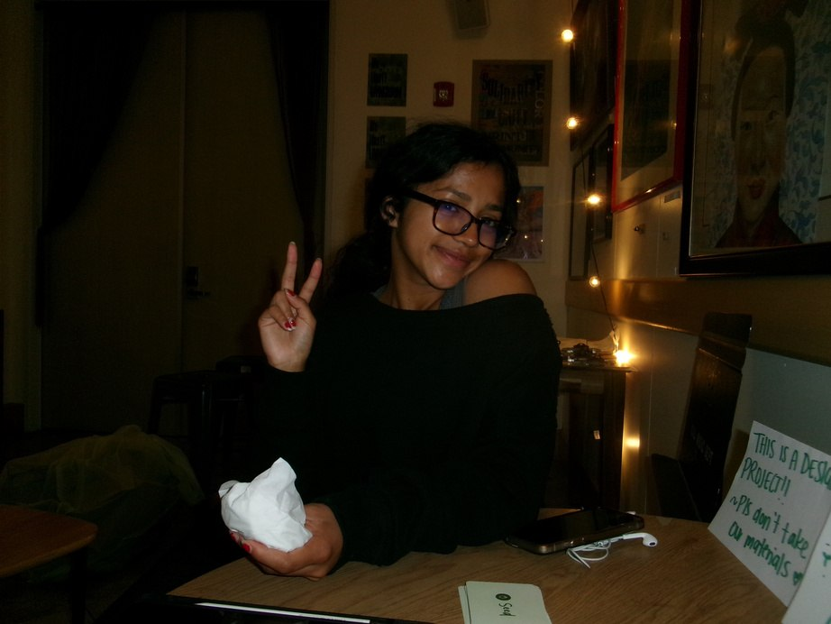
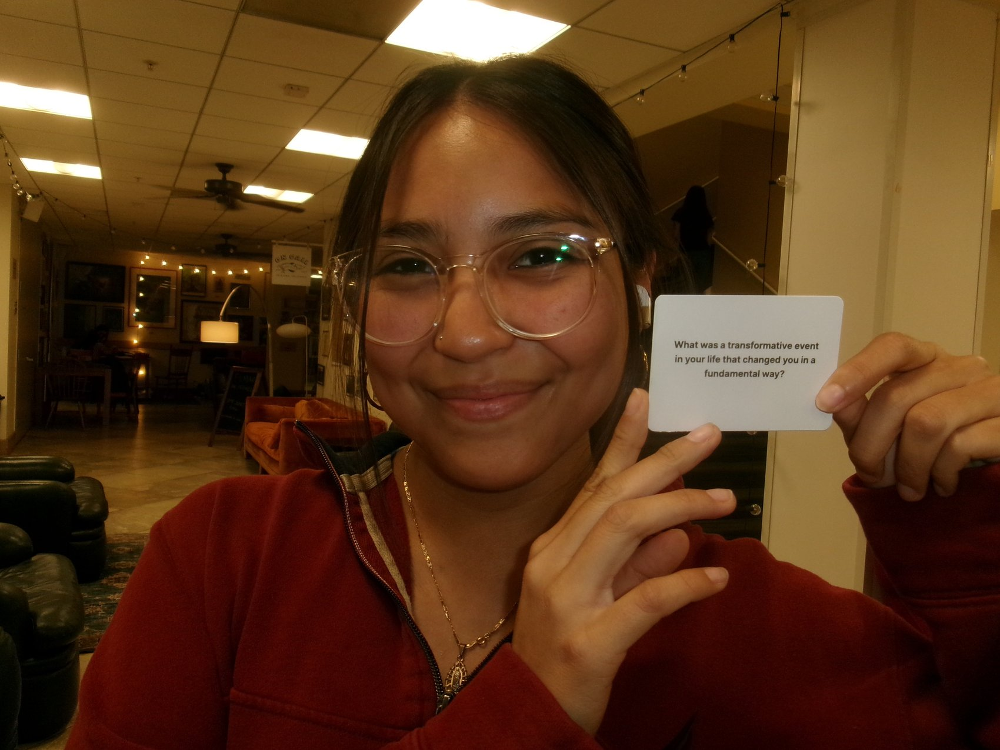
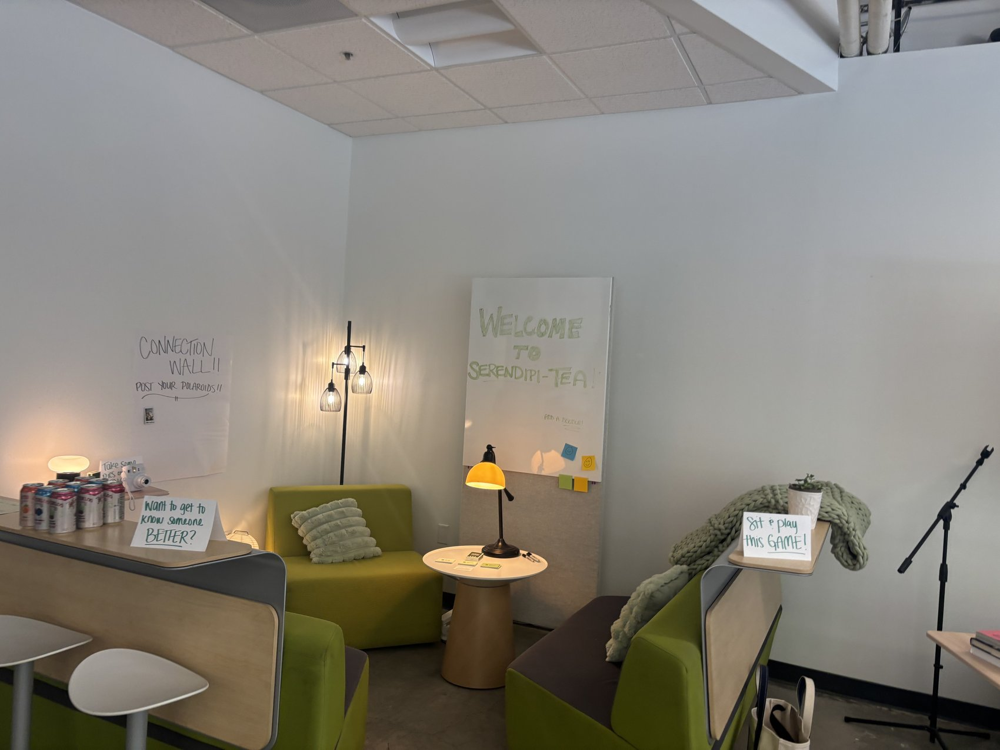
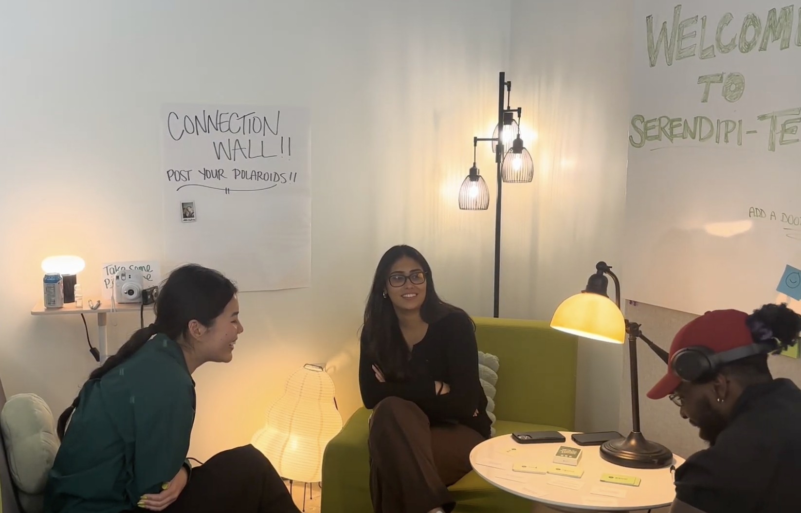
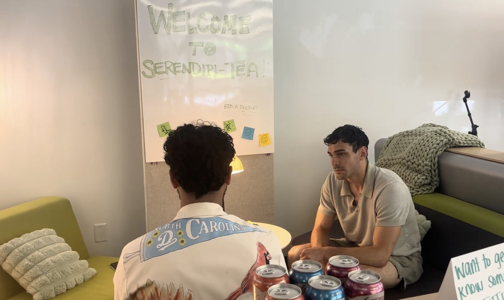
One of the more surprising outcomes was how quickly the founders' guards came down. Most of them spend their days pitching, networking, and performing a version of themselves built for a room full of investors or competitors. But once there was a vessel built strictly for connection, with no ask, no agenda, and nothing to prove, that professional mask seemed to just fall away. Conversations that started as polite small talk kept sliding into something more honest: grief, doubt, the parts of running a company nobody really talks about. It made the case that founders don't necessarily need more networking spaces. They need spaces that are explicitly not that.